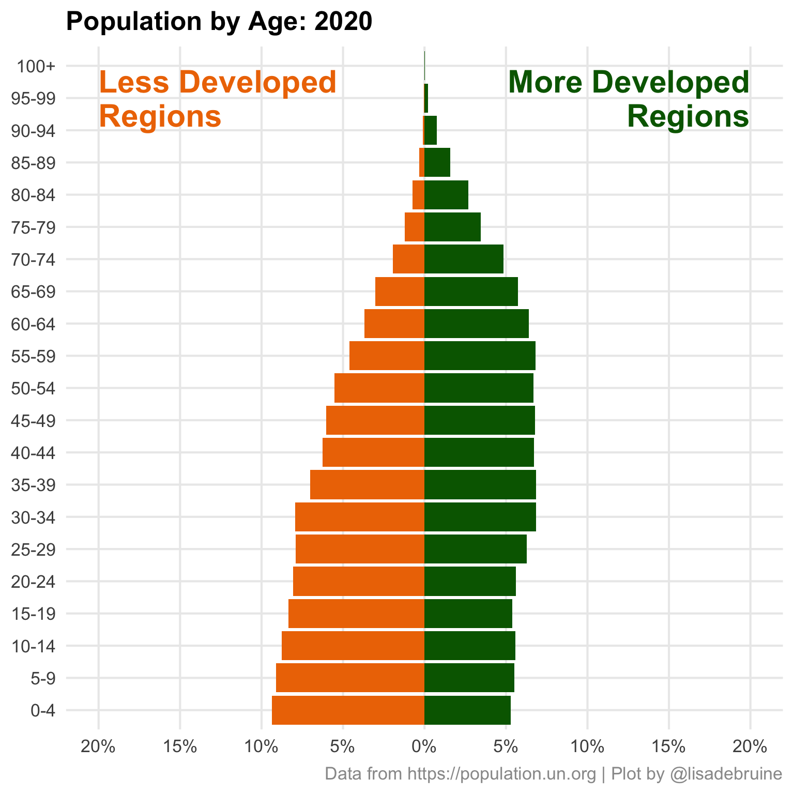

30 UN Population
I really like the population pyramids at the UN Population website, so I’m going to pull together all of the skills I’ve learned this month and make an animated version.
30.1 Data
The interactive data query is outstanding. I chose population by age for more and less developed regions from the UN development groups from 1950 to 2100 in 5-year intervals.
First, I’ll import the data, select the data for both sexes and the two locations I want to compare, and make the Age column a factor to keep the data in the right order in plots.
Code
dat <- read_xlsx("data/PopulationAgeSex-20220430074449.xlsx",
sheet = "Data", skip = 1) %>%
filter(Sex == "Both sexes combined") %>%
mutate(Location = recode(Location,
"Less developed regions" = "LDR",
"More developed regions" = "MDR")) %>%
filter(Location %in% c("MDR", "LDR")) %>%
mutate(Age = factor(Age, unique(Age))) %>%
select(-1, -Sex, -Note)
head(dat)| Location | Age | 1950 | 1955 | 1960 | 1965 | 1970 | 1975 | 1980 | 1985 | 1990 | 1995 | 2000 | 2005 | 2010 | 2015 | 2020 | 2025 | 2030 | 2035 | 2040 | 2045 | 2050 | 2055 | 2060 | 2065 | 2070 | 2075 | 2080 | 2085 | 2090 | 2095 | 2100 |
|---|---|---|---|---|---|---|---|---|---|---|---|---|---|---|---|---|---|---|---|---|---|---|---|---|---|---|---|---|---|---|---|---|
| MDR | 0-4 | 82893 | 87593 | 89475 | 87953 | 82992 | 81473 | 78083 | 78191 | 77564 | 71194 | 65679 | 65933 | 69648 | 69387 | 67495 | 65329 | 63693 | 62957 | 63263 | 63749 | 63609 | 62818 | 61897 | 61280 | 61143 | 61301 | 61426 | 61290 | 60905 | 60494 | 60264 |
| MDR | 5-9 | 67415 | 81751 | 87171 | 89501 | 88538 | 83146 | 81538 | 78424 | 78628 | 78506 | 72330 | 66369 | 66636 | 70231 | 70136 | 67832 | 65686 | 64077 | 63348 | 63655 | 64141 | 64003 | 63215 | 62297 | 61682 | 61546 | 61705 | 61831 | 61697 | 61312 | 60903 |
| MDR | 10-14 | 73044 | 67374 | 82191 | 87134 | 89862 | 88771 | 84137 | 82215 | 79287 | 80200 | 80225 | 73738 | 68123 | 67347 | 70826 | 70458 | 68173 | 66049 | 64446 | 63719 | 64026 | 64514 | 64378 | 63591 | 62675 | 62061 | 61926 | 62086 | 62213 | 62080 | 61695 |
| MDR | 15-19 | 68131 | 72511 | 67003 | 81977 | 86825 | 89778 | 89810 | 84802 | 83229 | 80632 | 81671 | 81788 | 75693 | 69617 | 68660 | 71823 | 71504 | 69285 | 67179 | 65581 | 64858 | 65169 | 65659 | 65525 | 64741 | 63828 | 63216 | 63083 | 63244 | 63373 | 63241 |
| MDR | 20-24 | 71208 | 67163 | 71809 | 66870 | 81112 | 86924 | 90179 | 90054 | 85137 | 83709 | 81362 | 83534 | 83688 | 77891 | 71524 | 70296 | 73571 | 73366 | 71177 | 69081 | 67489 | 66774 | 67091 | 67586 | 67458 | 66680 | 65772 | 65165 | 65036 | 65201 | 65333 |
| MDR | 25-29 | 64083 | 70301 | 66851 | 71699 | 66735 | 81757 | 86871 | 90332 | 89923 | 85664 | 84759 | 82951 | 84841 | 85510 | 79894 | 73085 | 71977 | 75356 | 75178 | 73000 | 70912 | 69334 | 68631 | 68956 | 69459 | 69341 | 68572 | 67673 | 67074 | 66952 | 67124 |
Now I need to convert the data from wide to long and calculate the percent of people in each age group for each year and location. The populations between the more and less developed regions are very different and that difference isn’t meaningful for this graph, so it is better to visualise the precent.
Code
| Age | year | MDR | LDR |
|---|---|---|---|
| 0-4 | 1950 | 0.102 | 0.148 |
| 0-4 | 1955 | 0.101 | 0.167 |
| 0-4 | 1960 | 0.098 | 0.163 |
| 0-4 | 1965 | 0.091 | 0.165 |
| 0-4 | 1970 | 0.082 | 0.164 |
| 0-4 | 1975 | 0.078 | 0.153 |
30.2 Plot
First, set up the basic plot for one year. Use geom_col() to plot one group with negative values and one group with positive values, then flip the coordinates.
30.3 Clean Up
Let’s make sure that the percent axis is wide enough for all years. Set the limits to the nearest 5% above the value.
I’ll also make the plot square and add annotations for the regions.
Code
dat %>%
filter(year == 2020) %>%
ggplot(aes(x = Age)) +
geom_col(aes(y = -LDR), fill = "darkorange2") +
geom_col(aes(y = MDR), fill = "darkgreen") +
annotate("text", label = "Less Developed\nRegions",
x = 20, y = -.2, size = 8,
color = "darkorange2", hjust = 0,
fontface = "bold", lineheight = 0.9) +
annotate("text", label = "More Developed\nRegions",
x = 20, y = .2, size = 8,
color = "darkgreen", hjust = 1,
fontface = "bold", lineheight = 0.9) +
scale_y_continuous(name = NULL,
breaks = ybreaks,
labels = ylabels) +
coord_flip(ylim = c(-ylim, ylim)) +
labs(x = NULL,
title = "Population by Age: 2020",
caption = "Data from https://population.un.org | Plot by @lisadebruine") +
theme(panel.grid.minor = element_blank(),
plot.title = element_text(face = "bold"),
plot.caption = element_text(color = "grey60"))
30.4 Animate
Comment out the year filter and add in transition_time(year) to set up the transition. Update the title to replace the year with floor(frame_time/5)*5 so the year advances in 5-year increments.
Code
anim <- dat %>%
#filter(year == 2020) %>%
ggplot(aes(x = Age)) +
geom_col(aes(y = -LDR), fill = "darkorange2") +
geom_col(aes(y = MDR), fill = "darkgreen") +
annotate("text", label = "Less Developed\nRegions",
x = 20, y = -.2, size = 8,
color = "darkorange2", hjust = 0,
fontface = "bold", lineheight = 0.9) +
annotate("text", label = "More Developed\nRegions",
x = 20, y = .2, size = 8,
color = "darkgreen", hjust = 1,
fontface = "bold", lineheight = 0.9) +
scale_y_continuous(name = NULL,
breaks = ybreaks,
labels = ylabels) +
coord_flip(ylim = c(-ylim, ylim)) +
labs(x = NULL,
title = "Population by Age: {floor(frame_time/5)*5}",
caption = "Data from https://population.un.org | Plot by @lisadebruine") +
theme(panel.grid.minor = element_blank(),
plot.title = element_text(face = "bold"),
plot.caption = element_text(color = "grey60")) +
gganimate::transition_time(year)I like to think about the number of frames in terms of the number of transitions and frame rate. At the default framerate of 10 fps, each 5-year transition will take about half a second if there are 5 times as many frames as transitions. As always, I save the gif and set the code chunk to eval = FALSE to avoid running this every time I knit the book.
Display with include_graphics() and set the alt-text for screen-readers.